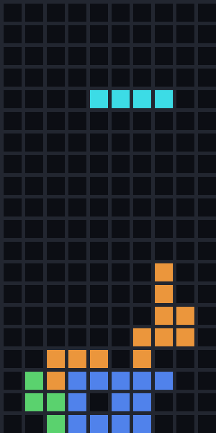
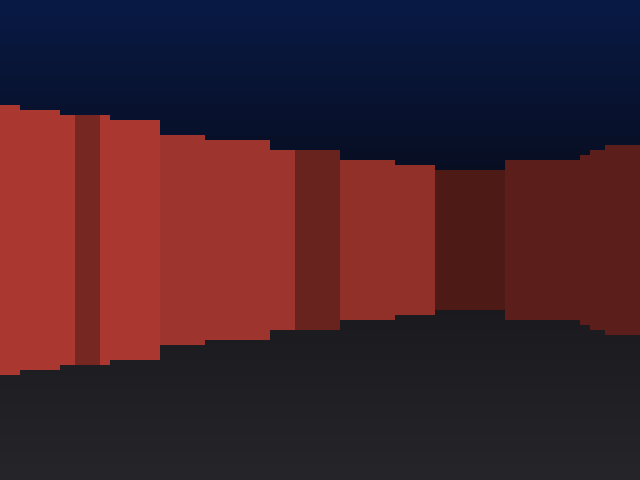
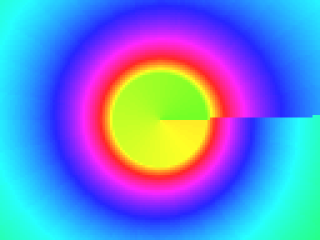
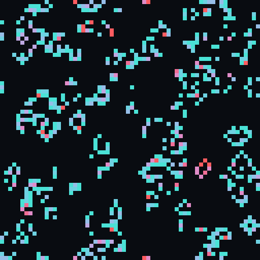
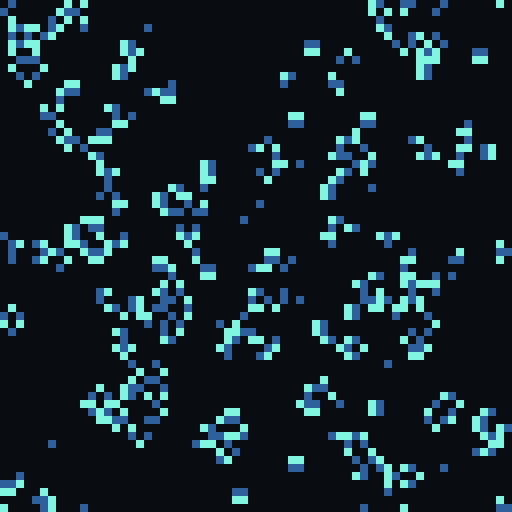

Each demo is one logic-gate netlist baked into a storage file. The host does nothing but pulse the clock
(one bounded ripple) and blit the framebuffer the pfc paints — no game logic, no 3D math, no rendering on the host.
Every one is verified byte-exact against a reference. Run them from host\ in the repo.

python host/pfc_tetris.py
python host/pfc_raycast.py
python host/pfc_tunnel.py
python host/pfc_game.py life
python host/pfc_game.py brainpython host/pfc_operator.pyThese images are frames the pfc produced — the host only laid out the addresses and copied the pixels.
Each demo has a --test mode that prints the byte-exact proof. The mechanism: stored logic, computing nothing
until a routed signal (the clock pulse) runs it. Owner & inventor: Bryce Muhlnickel.